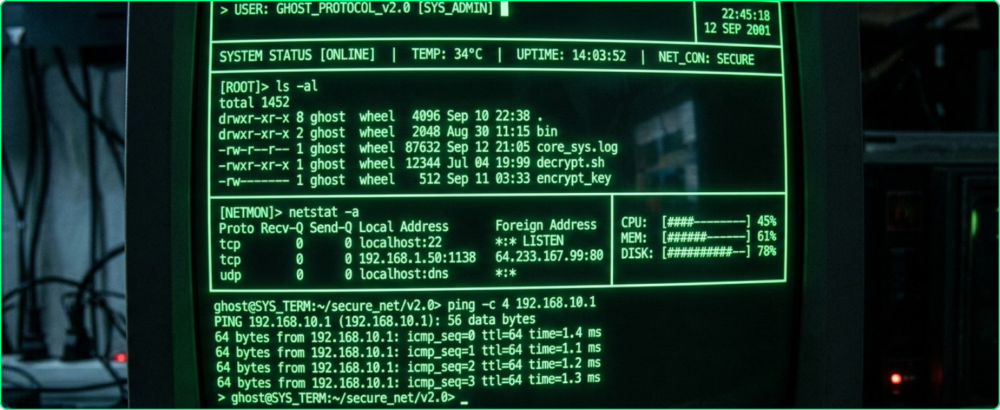

提升十倍的雲端平台
CloudSync Pro 是專為現代企業打造的一站式工作平台
即時協作 · AI 自動化 · 打通企業每個角落
$ cloudsync --init --enterprise --ai-enabled
✓ 連接至雲端叢集 [████████████] 100%
✓ AI 模組載入完成 STATUS: [ACTIVE] ▌

為什麼選擇 CloudSync Pro
在數位轉型浪潮下，企業面臨效率瓶頸與資訊孤島問題
CloudSync Pro 打通企業每個角落，讓您的團隊在任何地點都能無縫運作
跨部門即時協作
支援 500+ 人同時在線編輯文件，整合任務管理與協作白板，自動化週報生成直送主管信箱
AI 智慧任務分派
根據成員技能與工時自動分配任務，讓決策更快、執行更準，成本更低
企業 SSO 整合
相容 Okta、Azure AD、Google Workspace，99.99% SLA 保障，多地備援、資料零遺失
三大核心
協作 · 資料 · 行動 ── 讓您的團隊在任何地點都能無縫運作
協作白板
支援 500+ 人同時在線編輯文件，內建投票功能、即時貼圖，拖拉式介面，讓協作更直覺高效
資料儀表板
一眼掌握全公司 KPI 進度，5 分鐘建立專屬報表，AI 自動化週報直接寄送至主管信箱
行動 App
iOS / Android 雙平台，隨時掌握最新動態，讓您的團隊在任何地點、任何裝置上無縫協作
只需三個步驟，立即上手
從今天起，擁抱智慧工作新方式
建立帳號
填寫公司信箱，30 秒完成帳號建立，開啟免費 14 天試用
選擇產業模板
從 100+ 模板選擇最適合的工作流程，一鍵匯入現有資料
邀請成員加入
批次寄送邀請信，搭配新手導覽影片，即可讓全公司上手
立即投入工作
開始協作、自動整合您現有的工具鏈，讓團隊效率提升十倍
真實用戶，真實好評
"開會時間減少了一半，讓決策更快、執行更準。CloudSync Pro 讓我們的跨部門協作效率大幅提升。"
"我們的 IT 團隊幾乎不需要任何培訓就能上手，SaaS 平台中最直覺的 UI，開會時間減少了一半。"
立即開啟您的數位轉型之旅
今天就讓 CloudSync Pro 成為您最強大的競爭優勢
✓ 無需信用卡 ✓ 無任何風險 ✓ 隨時可取消